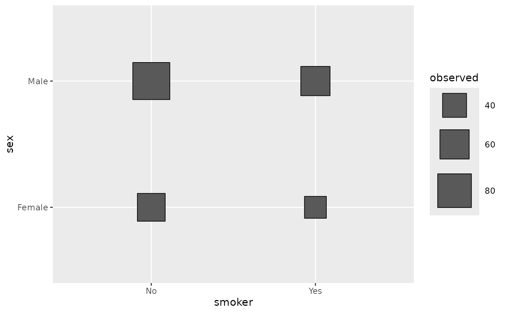
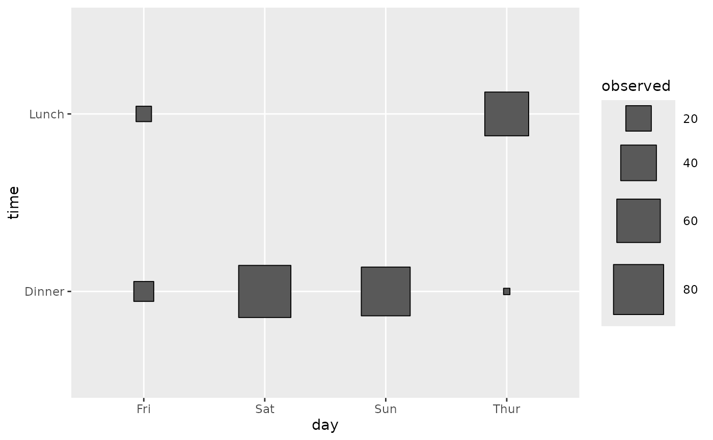
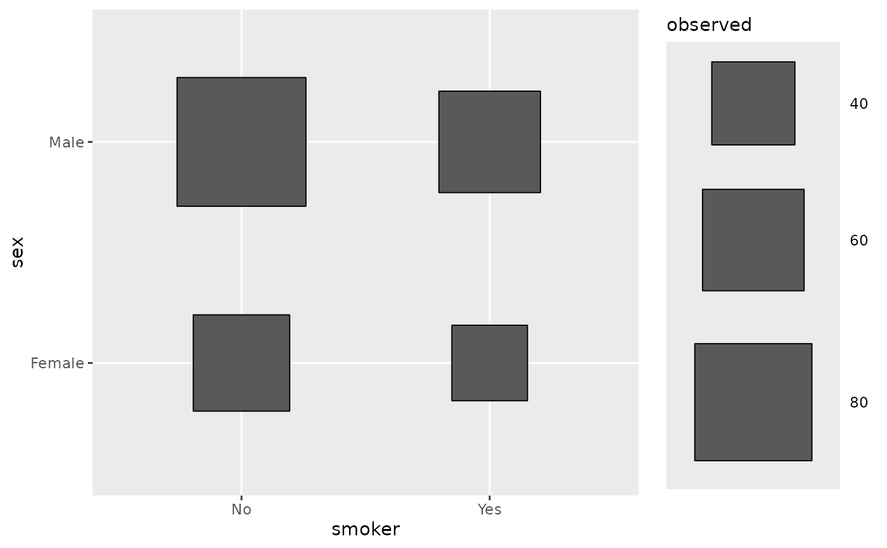
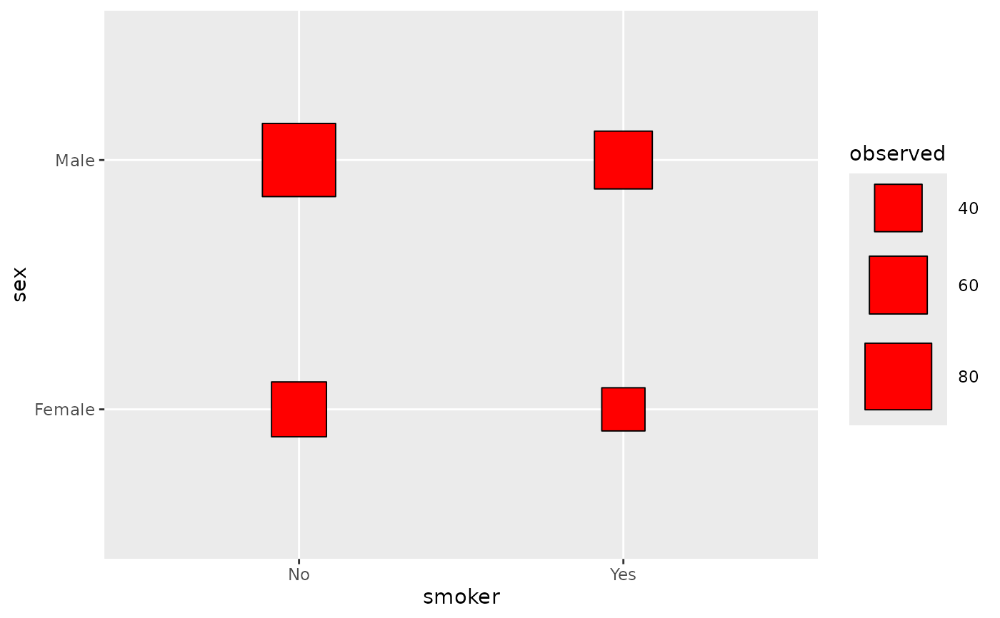
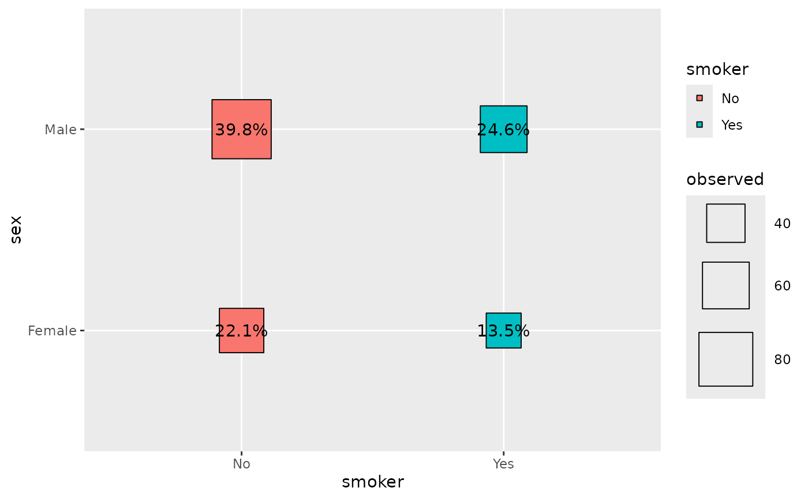
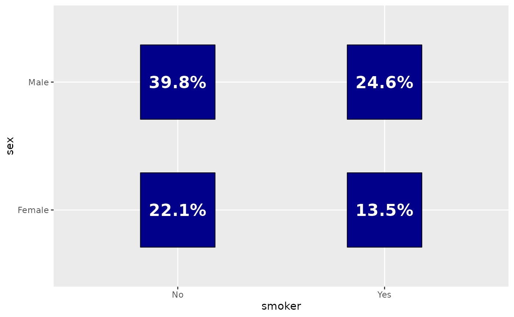
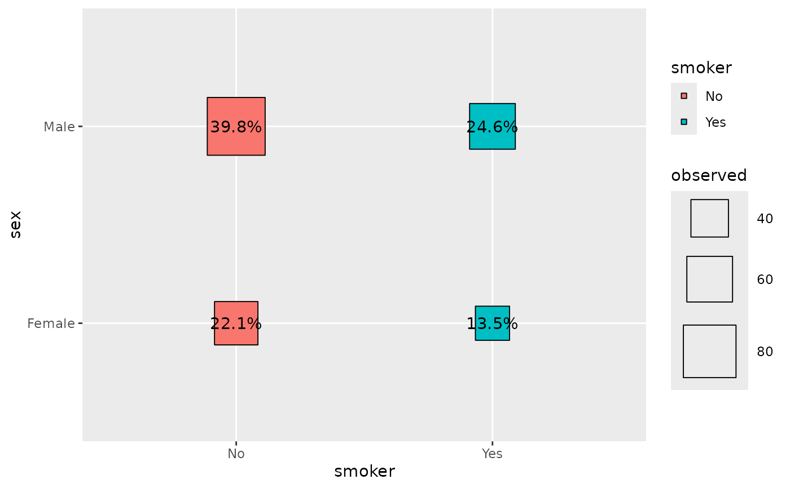
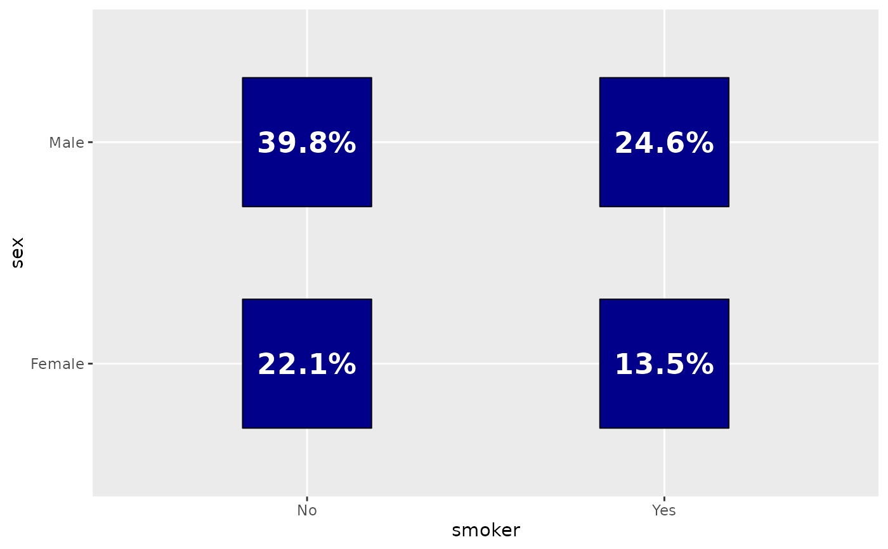

Plot the number of observations by using square points
with proportional areas. Could be filled according to chi-squared
statistics computed by stat_cross(). Labels could also
be added (see examples).
Arguments
- data
data set using
- mapping
aesthetics being used
- ...
other arguments passed to
ggplot2::geom_point()- scale_max_size
max_sizeargument supplied toggplot2::scale_size_area()- geom_text_args
other arguments passed to
ggplot2::geom_text()
Examples
# Small function to display plots only if it's interactive
p_ <- GGally::print_if_interactive
data(tips)
p_(ggally_cross(tips, mapping = aes(x = smoker, y = sex)))

p_(ggally_cross(tips, mapping = aes(x = day, y = time)))

# Custom max size
p_(ggally_cross(tips, mapping = aes(x = smoker, y = sex)) +
scale_size_area(max_size = 40))
#> Scale for size is already present.
#> Adding another scale for size, which will replace the existing scale.

# Custom fill
p_(ggally_cross(tips, mapping = aes(x = smoker, y = sex), fill = "red"))

# Custom shape
p_(ggally_cross(tips, mapping = aes(x = smoker, y = sex), shape = 21))
# Fill squares according to standardized residuals
d <- as.data.frame(Titanic)
p_(ggally_cross(
d,
mapping = aes(x = Class, y = Survived, weight = Freq, fill = after_stat(std.resid))
) +
scale_fill_steps2(breaks = c(-3, -2, 2, 3), show.limits = TRUE))
 # Add labels
p_(ggally_cross(
tips,
mapping = aes(
x = smoker, y = sex, colour = smoker,
label = scales::percent(after_stat(prop))
)
))

# Customize labels' appearance and same size for all squares
p_(ggally_cross(
tips,
mapping = aes(
x = smoker, y = sex,
size = NULL, # do not map size to a variable
label = scales::percent(after_stat(prop))
),
size = 40, # fix value for points size
fill = "darkblue",
geom_text_args = list(colour = "white", fontface = "bold", size = 6)
))

# Add labels
p_(ggally_cross(
tips,
mapping = aes(
x = smoker, y = sex, colour = smoker,
label = scales::percent(after_stat(prop))
)
))

# Customize labels' appearance and same size for all squares
p_(ggally_cross(
tips,
mapping = aes(
x = smoker, y = sex,
size = NULL, # do not map size to a variable
label = scales::percent(after_stat(prop))
),
size = 40, # fix value for points size
fill = "darkblue",
geom_text_args = list(colour = "white", fontface = "bold", size = 6)
))
